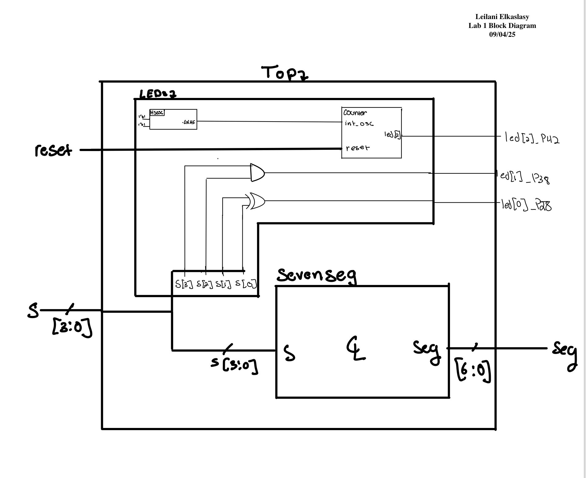
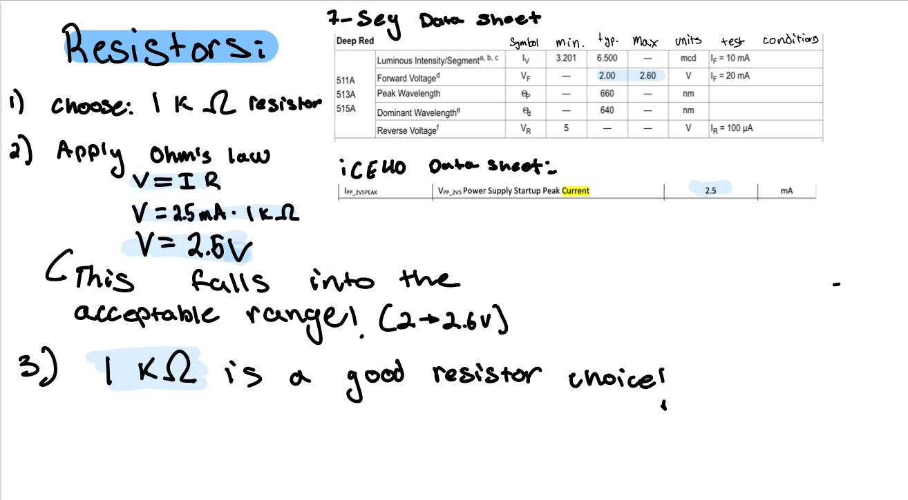
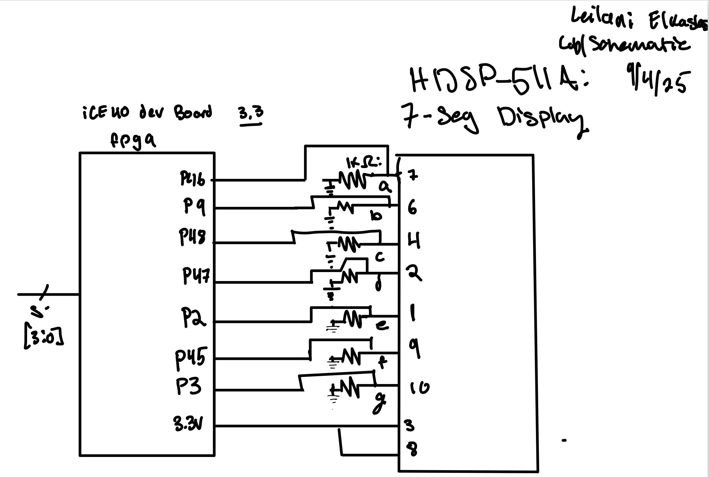
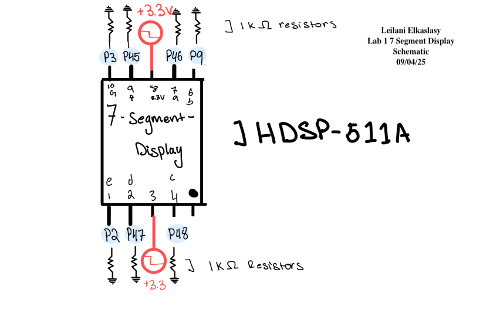
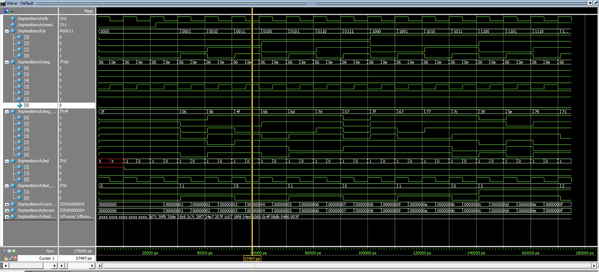
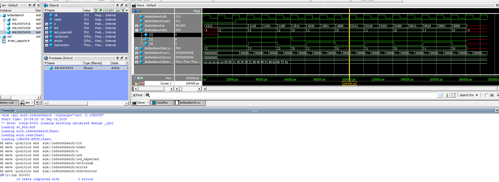
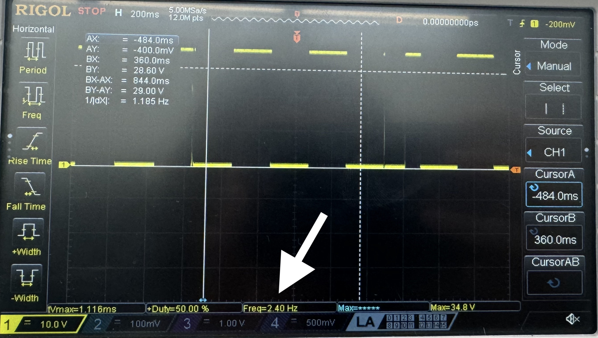
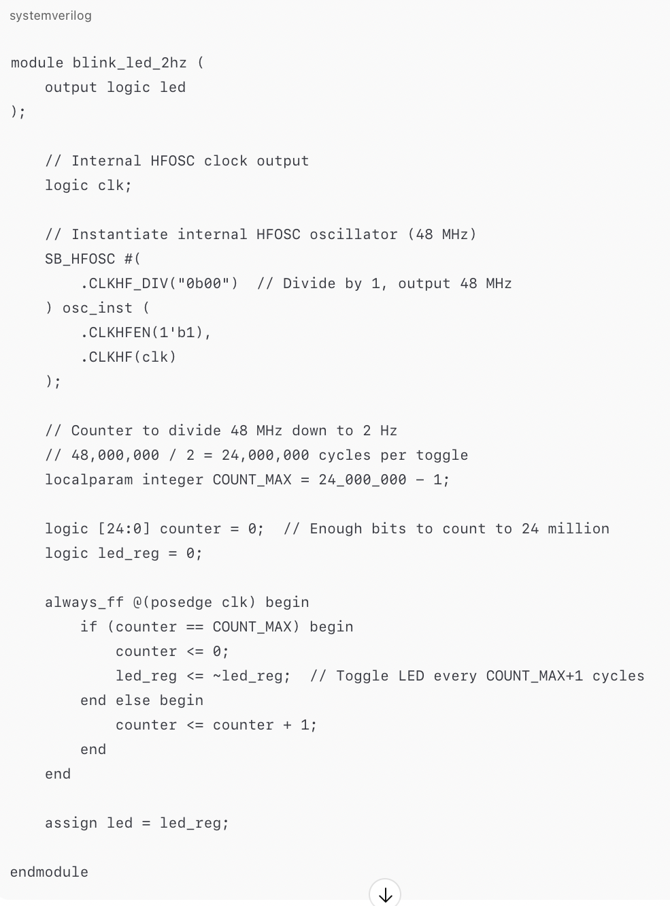
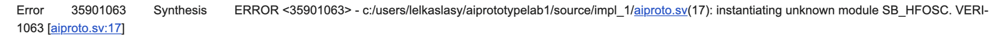
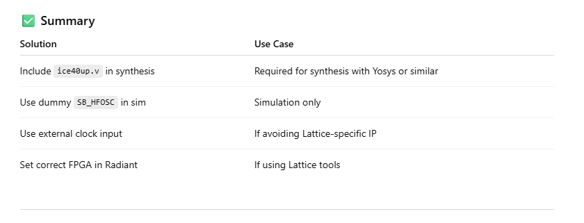

Lab 1
Introduction
This week a iCE40 UP5K FPGA development board was assembled to house a UPduino v3.1 MCU. The board’s functionality was verified by programming a seven segment display to represent all digits of hex based on 4 switches on the dev board represented by inputs s[3:0]. In order to further test the functionality three LEDs on the dev board were programmed- 2 to turn on based on inputs s[3:0] and 1 to oscillate at 2.4 Hz. Both the seven segment display and all 3 leds worked as expected, both in sim and in situ, confirming the FPGA dev board’s functionality. This process took a total of 30 hours.
Design and Testing Methodology
Technial Documentation
Github repository containing all code used for this lab: https://github.com/lanilei/E155labs/tree/main/lab1
Block Diagram
 In order to approach solving this problem, each function was seperated into its own module. The LEDs were combined to be driven by LED.SV and the Seven segment display was controlled using combinational logic in its own module. These two modules were tied together using a top module that called upon them both.
Calculations

Schematic
Using the resistor value confirmed by the above calculations I created a circuit on a breadboard in accordance with the following schematic:


Results and Discussion
Both the simulated and physical circuit were tested extensively confirming all desired functionality. The seven segment display showed all possible digits of hex in accordance with the input switches s[3:0]. LED 2 Oscillated at 2.4 Hz. LED 1 turned on when S[2] & S[1] outputed high. LED 0 turened on when S[1] XOR S[0] outputed high.
Testing
Testbenches
The system verilog modules were tested individually using a simulated testbench. All Modules were confirmed to work as expected.



Physical Circuit testing
The FPGA Dev Board and bread board circuit were all tested extensively in the lab by ensuring the input switches, LEDs, and seven segment display worked as expected. 
Conclusion
This was an engaging and educational lab 30 hour lab. Through assembly, programming, and debugging a seven segment display was fully realized along with some additional LEDs.
AI Results Summary
 The AI generated system verilog was interesting. I would not have thought to use local param integer command for the counter. The most useful part of the experience of prompting AI was the immediate generation of a full module. However, it did not include enough detail for me to understand the details of its implementation.

The AI seemed to call upon a module that didn’t exist as it did not define SB_HFOSC as a module. This type of hallucination is why it can be more difficult to program with AI than without it.

None of the suggested resolutions included establishing SB_HFOSC as a module. It instead put out a bunch of solutions that seemed to overcomplicate things.
A better use of AI would be to have it explain error messages and help with recalling forgotten syntax. It is better to do the programming oneself.
Thank you for reading my write up! Stay tuned for another exciting lab drop next week!!!